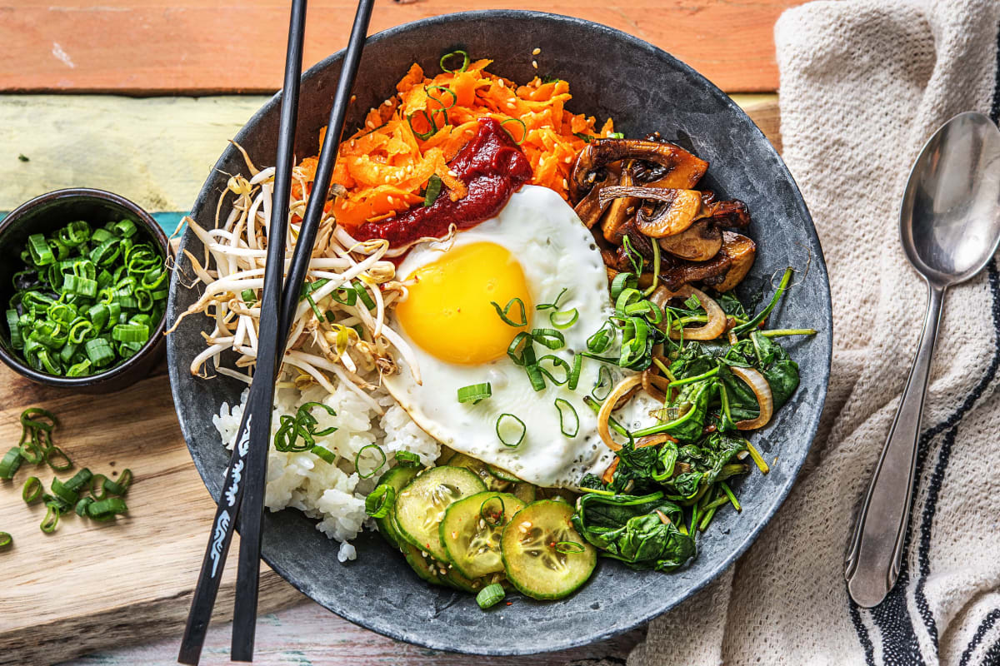
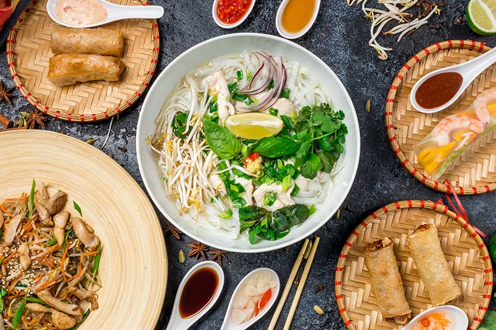

Vegane Poke Bowl
Diese vegane Poke Bowl mit knusprigem Tofu und cremiger Tahini-Sauce ist ein einfaches Rezept, das
gesund, glutenfrei,
anpassbar und so lecker ist! Verwende Reis oder sogar Nudlen, beliebiges buntes knackiges Gemüse sowie
Tofu,
Edamame-Bohnen oder Kichererbsen für pflanzliches Protein, um die perfekte Rainbow Bowl zum Mittag-
oder Abendessen zu kreieren!
- Sojasauce, Hoisin-Sauce, Limettensaft und geriebenen Ingwer in einer mittelgroßen Schüssel
vermischen
und den gewürfelten Tofu unter Rühren zugeben. Für 25 Minuten marinieren.
- Den Reis in reichlich kochendem Wasser nach Packungsanweisung garen, abtropfen lassen und mit kaltem
Wasser abspülen.
- Die Gurke mit dem Gemüseschnellschneider in grobe Scheiben schneiden. Mit der dünnen Schneidscheibe
des Gemüseschnellschneiders die Radieschen schneiden. Nun mit der feinen Raspelscheibe die Karotte
raspeln.
- gekühlten Reis auf die 2 Schüssel mittig verteilen, eine Handvoll Gemüse und Ananas jeweils
getrennt um den Rand auf den Reis legen. Den marinierten Tofu in die Mitte der Schüssel geben, mit
viel
Sauce und Sesam bestreuen. Mit etwas Koriander und einer Limettenhälfte servieren.

Bibimbap
Eine Bowl voller gesunder Köstlichkeiten: Das koreanische Nationalgericht Bibimbap gibt in zahlreichen
Varianten,
da es sich hier um eine Art Resteessen handelt. die Basis bilden aber meist Reis, Gemüse und Ei.
Zubereitung
- Sushireis mit kaltem Wasser abspülen, bis dieses klar hindurchfließt. Wasser und Salz in einem Topf
einmal aufkochen lassen. Reis einrühren und circa 15 Min. bei niedrigster Hitze abgedeckt köcheln
lassen. Topf vom Herd nehmen und Reis mindestens 10 Min. quellen lassen.
- Champignons vierteln, Karotten schälen und grob reiben, Gurke in feine Scheiben schneiden. Weißen
und
grünen Teil der Frühlingszwiebel getrennt voneinander in dünne Ringe schneiden. Knoblauch abziehen
und
pressen.
- In einer kleinen Schüssel die Gurke, die Hälfte des Sesamöls, geschroteten Chili, die Hälfte der
Sojasoße, ein Viertel des gepressten Knoblauchs und die Hälfte des Sesams vermischen. Mit Salz und
Pfeffer würzen.
- In einer weiteren kleinen Schüssel geriebene Karotten mit restlichem Sesamöl und Sesam vermengen.In
einer großen Pfanne Sesam ohne Zugabe von Fett 2 bis 3 Min. rösten, bis es anfängt zu duften.
Anschließend aus der Pfanne nehmen.
- In der gleichen Pfanne Öl bei mittlerer Hitze erwärmen und Champignons 3 bis 4 Min. anbraten. Mit
restlicher Sojasoße und Honig ablöschen. Ein weiteres Viertel des gepressten Knoblauchs dazugeben, 1
Min. einköcheln lassen und aus der Pfanne nehmen.
- In dieselbe Pfanne ohne Zugabe von Fett weiße Frühlingszwiebelringe, restlichen Knoblauch und
portionsweise Babyspinat zugeben. Spinat etwas zusammenfallen lassen und anschließend aus der Pfanne
nehmen.
- In der Pfanne erneut Öl auf hoher Stufe erwärmen und Eier darin ca. 3 Min. braten. Mit Salz und
Pfeffer
würzen.
- Sushireis mit einer Gabel etwas auflockern, Weißweinessig unterrühren und in Schüsseln anrichten.
Rundherum Babyspinat, Sojasprossen, Karottensalat, Champignons und Gurkensalat verteilen. Mit
Spiegelei
und Sambal Oelek toppen, grüne Frühlingszwiebelringe darüberstreuen und genießen. Tipp: In Korea
vermischt man jetzt alles!

Pho
Zubereitung und Varianten
Sie wird in einer Schüssel gereicht und enthält neben einer kräftigen klaren Brühe (meist aus
Rinderknochen) Reisnudeln und traditionellerweise dünne Scheiben Rindfleisch (phở bò; phở tái, wenn das
Fleisch erst in der Schüssel garzieht) oder Hühnerfleisch (phở gà).
Weitere Zutaten sind Zwiebel- oder Lauchringe, Koriandergrün, Minze, Chilis in Scheiben, weißer Pfeffer,
Limettenspalten und Fischsauce, in Südvietnam auch vietnamesisches Basilikum und Mungbohnenkeime. Diese
Zutaten werden meist gesondert auf Tellern gereicht,
um sich seine Suppe nach Belieben anzureichern und zu würzen.Die Suppe wird in Vietnam im Straßenverkauf
angeboten. Traditionell ist Phở ein Frühstück. Deswegen öffnen viele darauf spezialisierte Restaurants
schon früh morgens und schließen im Laufe des Vormittags.
Vor allem in größeren Städten gilt diese Einschränkung nicht.Es gibt in Nord- und Südvietnam
unterschiedliche Zubereitungsarten: während in Hanoi eine eher helle und dezent gewürzte Brühe verwendet
wird, werden im Süden die Fleischknochen vor dem Kochen häufig über
Holzkohle angeröstet, um die Brühe intensiver in Farbe und Geschmack zu machen und vor dem Verzehr
wesentlich mehr Würzzutaten zugegeben.Im Jahr 2017 führte das vietnamesische Amt für Geistiges Eigentum
den „Internationalen Phở-Tag“ ein, um der Bedeutung des Gerichts
als Kulturgut mehr Ausdruck zu verleihen.
- Die Knochen, den Ochsenschwanz und das Rindfleisch zum Kochen gründlich unter fließendem,
lauwarmem Wasser waschen.
Anschließend in einem 10l Topf die Knochen und den Ochsenschwanz mit kaltem Wasser aufsetzen, sodass
alles bedeckt ist. Bei größter Temperatur zum Kochen bringen und den aufsteigenden Schaum
abschöpfen.
- Sobald sich, nach ca. 5 Minuten kein Schaum mehr bildet den Topf abgießen, die Knochen und den
Ochsenschwanz gründlich unter fließendem Wasser reinigen, den Topf ebenfalls reinigen.
Die Knochen, den Ochsenschwanz und das Rindfleisch mit 6 Litern kaltem Wasser auf höchster
Temperatur auf den Herd setzen. Nach dem Aufkochen die Hitze herunterdrehen, neu entstehenden
Schaum abschöpfen und bei geringer Hitze köcheln lassen.
Während des gesamten Kochvorgangs keinen Deckel aufsetzen, damit die entstehenden Gerüche sich
verflüchtigen können.
- Den Ingwer und die Schalotten säubern und mit Schale in ein Grillgitter legen und entweder über
Holzkohlenfeuer oder einer Gasflamme grillen, bis die Außenhaut schwarz ist.
Mit einer Wurzelbürste unter fließendem Wasser gründlich abbürsten, bis die schwarzen Stellen
komplett verschwinden. Ingwer und Schalotten zur Brühe hinzugeben.
Alternativ kann man sie auch in einer Eisenpfanne trocken d.h. ohne Öl rösten.
- Nach 2 Stunden den Gargrad das Rindfleisch mit einer Gabel prüfen, es sollte nachgiebig und nicht
mehr elastisch sein, aber noch nicht auseinanderfallen. Herausnehmen und in eine Schale mit
Eiswasser legen, damit es sich nicht verfärbt. Sobald es abgekühlt ist, in Frischhaltefolie wickeln
und im
Kühlschrank aufbewahren.
- Die Reisnudeln in warmem Wasser einweichen.
-
Die Kardamomkapsel mit einem schweren Küchenmesser in der Mitte teilen, ohne sie komplett
durchzuschneiden, zusammen mit dem Zimt und dem Sternanis in einer Pfanne bei niedriger Hitze leicht
anrösten, bis sie beginnen zu duften. Anschließend zur Brühe hinzugeben.
Wenn man unser Pho-Gewürz verwendet, gibt man einen gestrichenen Esslöffel dazu.
Die Brühe mit 5 Esslöffeln Fischsauce, 1 Esslöffel Salz und 1 Esslöffel Zucker würzen und auf
kleiner Flamme weiter köcheln lassen.
- Nach insgesamt 4 Stunden Kochzeit die Knochen und die Gewürze aus der Brühe entfernen. Sie durch ein
feines Sieb oder besser ein Küchenhandtuch passieren, um eine klare Flüssigkeit zu erhalten.
Die Brühe abschmecken und falls nötig noch mit Fischsauce, Salz und Zucker nachwürzen. Sie sollte
lieber etwas kräftiger schmecken, da sie ohnehin durch die spätere Zugabe der Nudeln leichter im
Geschmack
wird.
- 6 tiefe Suppenschalen vorwärmen.
Die Frühlingszwiebeln waschen. Das Grüne in feine Röllchen schneiden, das Weiße längs in feine
Streifen schneiden.
Die Limette achteln, die Vogelaugenchilis kleinschneiden und zusammen mit dem gestoßenen Pfeffer und
der Fischsauce bereitstellen.
- Das rohe, noch angefrorene Rindfleisch gegen die Faser in hauchdünne Scheiben schneiden und auf
einen Teller legen.
Das gekochte Rindfleisch ebenfalls gegen die Faser in hauchdünne Scheiben schneiden und auf einen
weiteren Teller legen.
- Die Reisnudeln aus dem Wasser nehmen und abtropfen lassen.
Einen Topf mit Wasser zum Kochen bringen. Die Nudeln portionsweise 10-15 Sekunden blanchieren und
auf die vorgewärmten Suppenschalen verteilen.
Je 3-4 Scheiben gekochtes Rindfleisch auf den Nudeln verteilen. Darauf 2 Scheiben von dem rohen
Rindfleisch legen.
Die Brühe nochmals aufkochen und kochend heiß in die Schalen füllen, sodaß alle Zutaten gleichmäßig
mit der heißen Brühe in Verbindung kommen. Pho Bo muss sehr heiß serviert werden!
Die Frühlingszwiebeln drüberstreuen und sofort servieren.
Am Tisch mit Fischsauce, Limettensaft, Pfeffer und Chilis würzen.